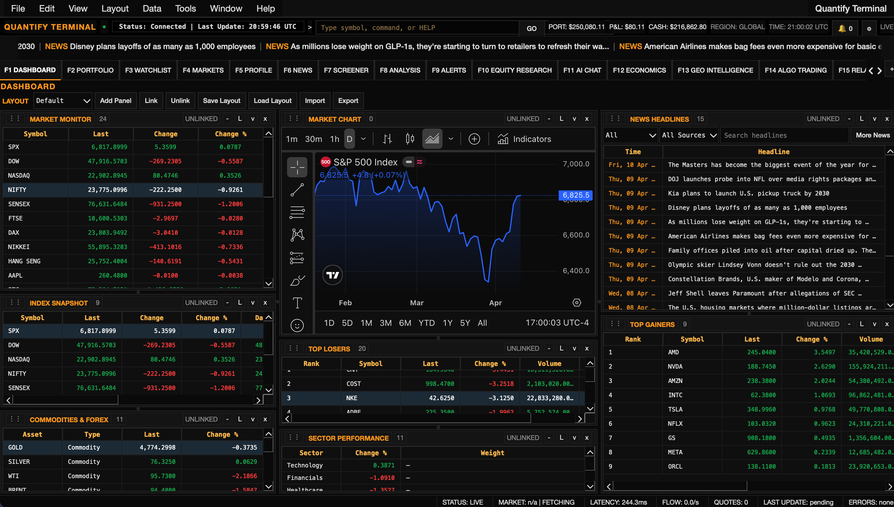
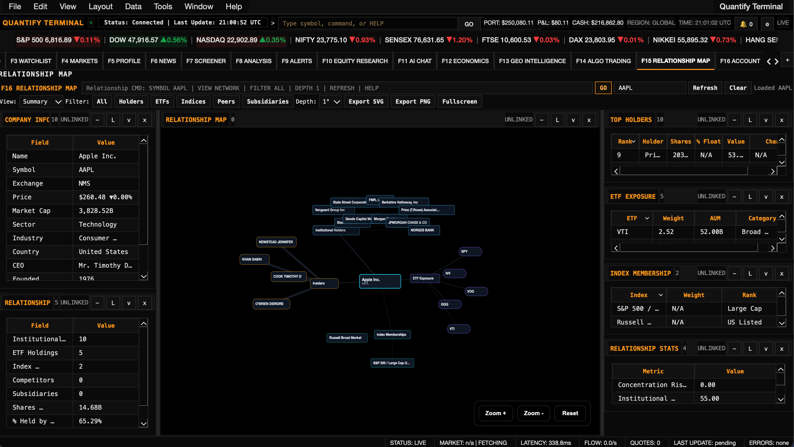
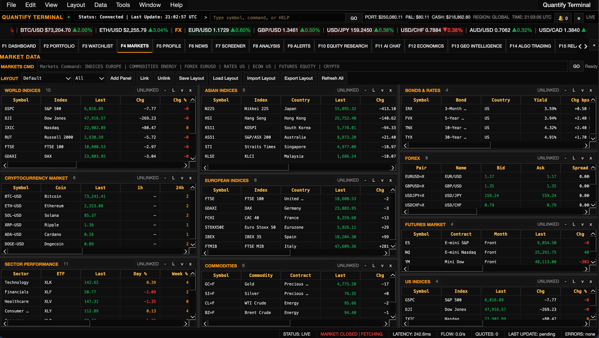

Dynamic Fluid Layouts
Our custom-built PyQt6 panel manager features free-form panel resizing across 15+ tabs with persistent layout memory. The interface adapts to the trader, not vice-versa.
An institutional-grade desktop terminal built natively in Python. Featuring a fully dynamic 15+-tab GUI, blazing fast asynchronous data routing, and integrated Advanced GPU Charting.
Version 2.0 Enterprise Release

Quantify Terminal is explicitly engineered for professional algorithmic traders and financial researchers. Leveraging 100% Python, the platform implements complex Non-Blocking Data Streams utilizing QThread and asyncio to ensure maximum UI responsiveness even under high tick loads.
This allows for massive volumes of background tasks—like multi-currency threaded FX conversions and live global news aggregation—without stutter or latency across the 15+-tab workstation layout.


Our custom-built PyQt6 panel manager features free-form panel resizing across 15+ tabs with persistent layout memory. The interface adapts to the trader, not vice-versa.
Data fetch pipelines run entirely asynchronously in background threads. Prices, news, and FX conversions update simultaneously without dropping a UI frame.
Integrated Account settings ensure proprietary data is protected via enterprise-grade login verification, OTP authentications, and secure administrative dashboards.
A unified interface where data latency is zero, workflows are completely customizable, and execution is paramount.